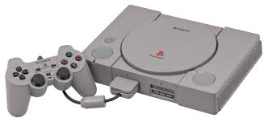
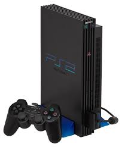
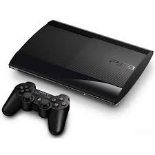
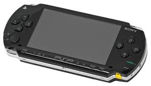
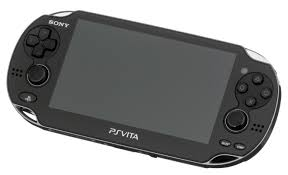

Przerabianie Konsol
Jakie konsole potrafimy przerobić?
W społeczności Retro Gamers pomagamy w modyfikacji konsol PlayStation — zarówno starszych, jak i nowszych generacji.






- 🟢 Bezpieczna
- 🟡 Częściowa
- 🔴 Ograniczona
Przeróbki konsol
Status: 🟢 Bezpieczna przeróbka
Metody: softmod, uruchamianie gier z kopii zapasowych.
Status: 🟢 Bezpieczna przeróbka
Metody: FreeMCBoot, OPL, gry z USB/HDD.
Status: 🟢 Bezpieczna przeróbka
Metody: Custom firmware, backup gier, emulator retro.
Status: 🟢 Bezpieczna przeróbka
Metody: custom firmware, uruchamianie kopii gier z karty pamięci.
Status: 🟡 Częściowa przeróbka
Metody: HENkaku, uruchamianie homebrew i emulatorów retro.
Status: 🟡 Częściowa przeróbka
Ograniczenia: nowe aktualizacje systemu mogą blokować przeróbki.
Status: 🔴 Ograniczona przeróbka
Przeróbki są eksperymentalne i niezalecane.
Obsługiwane konsole
🎮 PlayStation 1 (PS1)
- SCPH-1000 / 1001 / 1002
- SCPH-3000 / 3500
- SCPH-5000 / 5500
- SCPH-7000 / 7500
- SCPH-9000
🎮 PlayStation 2 (PS2)
FAT:- SCPH-30000
- SCPH-35000
- SCPH-39000
- SCPH-50000
- SCPH-70000
- SCPH-75000
- SCPH-77000
- SCPH-79000
- SCPH-90000 (wybrane wersje)
🎮 PlayStation 3 (PS3)
- FAT – CECHA / CECHB / CECHC / CECHD / CECHE / CECHF / CECHG
- SLIM – CECH-2000 / 2100 / 2500
- SUPER SLIM – CECH-4000
🎮 PlayStation Portable (PSP)
- PSP-1000
- PSP-2000
- PSP-3000
- PSP Go (N1000)
- PSP Street (E1000)
🎮 PlayStation Vita
- PCH-1000 (OLED)
- PCH-2000 (Slim)
- PlayStation Vita TV
🎮 PlayStation 4 (PS4)
- PS4 FAT – CUH-1000 / 1100 / 1200
- PS4 Slim – CUH-2000
- PS4 Pro – CUH-7000
🎮 PlayStation 5 (PS5)
- CFI-10xx
- CFI-11xx
- CFI-12xx
Ciekawostki o konsolach
PS1
PlayStation pierwotnie nie miało powstać – Sony współpracowało z Nintendo przy projekcie SNES-CD, ale projekt upadł, a Sony stworzyło własną konsolę.
PS2
PS2 jest najlepiej sprzedającą się konsolą w historii – ponad 155 milionów sztuk na całym świecie!
PS3
PS3 miało kosztować prawie 600 dolarów przy premierze w USA – jedna z najdroższych konsol na start.
PSP
PSP było pierwszą przenośną konsolą Sony z możliwością odtwarzania filmów UMD.
PS Vita
PS Vita posiadała dwa analogowe drążki – jedyne wśród przenośnych konsol Sony.
PS4
PS4 początkowo nie obsługiwało wstecznej kompatybilności z grami z PS3 – wymagało emulacji lub streamingu.
PS5
PS5 posiada ultrawydajny dysk SSD, który skraca czas ładowania gier do minimum.
Q&A / FAQ
Tak, istnieje ryzyko, dlatego zawsze zalecamy dokładne instrukcje i wykonywanie przeróbek tylko zgodnie z poradnikami. Nie odpowiadamy za uszkodzenia sprzętu.
Przeróbki sprzętowe są legalne, jeśli nie obejmują nielegalnego oprogramowania lub pirackich gier. Pomagamy wyłącznie w modyfikacji sprzętu i homebrew.
Nie zawsze – niektóre modyfikacje mogą zostać wykryte przez sieć i prowadzić do ograniczeń online. Zalecamy sprawdzanie aktualnych zasad producenta.
Dołącz do naszego Discorda, gdzie udostępniamy poradniki, instrukcje i pomoc od społeczności.
Dlaczego my?
- ✔ Doświadczenie
- ✔ Pomoc community
- ✔ Brak opłat
Czego nie robimy
- ❌ Nie sprzedajemy gier
- ❌ Nie omijamy zabezpieczeń online
Jak wygląda proces?
- Kontakt na Discordzie
- Sprawdzenie wersji systemu
- Instrukcja krok po kroku
Pomagamy z softmodem, custom firmware, uruchamianiem gier, konfiguracją gier, emulatorami oraz konfiguracją systemu.
Do pobierania gier polecamy stronke CDromance
Albo stronke Tha Vault
FAQ
Czy przeróbka PS5 jest bezpieczna?
Zależy od wersji systemu.
Nie zachęcamy do piractwa. Pomagamy wyłącznie w modyfikacji sprzętu.
Nie odpowiadamy za błędne modyfikacje sprzętu. Pomagamy wyłącznie informacyjnie.